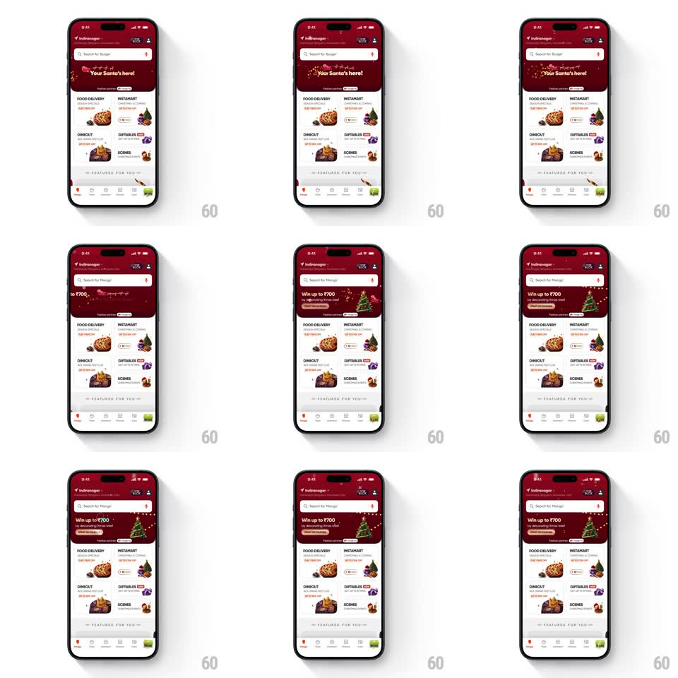

Media
Frame-by-frame

Rebuild this animation 1:1: Swiggy's Christmas home - the festive banner carousel auto-plays ("Your Santa's here!" into "Win up to ₹700...") while the search bar's placeholder tickers vertically through dish names.

Rebuild this animation 1:1: Swiggy's Christmas home - the festive banner carousel auto-plays ("Your Santa's here!" into "Win up to ₹700...") while the search bar's placeholder tickers vertically through dish names.
## Integration
Integration: stack-agnostic spec - springs given as stiffness/damping, timed motions as duration + curve; map every value to your framework and animation library of choice.
## Scene
Swiggy home in a dark-red Christmas skin: location header, a search bar whose placeholder cycles ("Search for 'Burger'", "Search for 'Mango'"), an auto-playing festive banner carousel ("Your Santa's here!" with lights; "Win up to ₹700 by decorating X'mas tree!" with a decorated tree), a category grid (Food Delivery, Instamart, Dineout, Giftables, Scenes) with holiday-dressed thumbnails, and the tab bar.
## Motion spec
Pattern: auto-playing banner carousel plus a vertical search-placeholder ticker.
- The banner carousel auto-advances every ~3s: the current banner slides left and fades (350ms, ease-in-out) as the next slides in from the right; the page dots beneath swap their active fill in the same beat.
- Each banner's own content animates on entry: headline letters fade up staggered (25ms apart, 250ms) and the tree/lights illustration twinkles (small opacity flickers on 1.5s loops).
- Independently, the search placeholder tickers vertically every ~2.5s: the current dish name rolls up and out (250ms, ease-in) while the next rolls in from below - the static "Search for" prefix and quotes never move, only the dish word.
- The category grid stays still - the motion lives in the banner and the search bar only.
- A light snow/speckle drift overlays the header zone (slow fall, 4s loops) through the whole session.
## Calibration
- Two clocks run at once (banner ~3s, ticker ~2.5s) - they are deliberately out of phase; never sync them.
- The ticker changes only the quoted dish word - the rest of the placeholder is static.
## Reduced motion
Banners crossfade on advance; the placeholder swaps without the vertical roll; no snow.
## Don't miss
- The banner's second card is a prize mechanic ("Win up to ₹700 by decorating X'mas tree!") - keep its CTA chip visible.
- The whole home keeps normal Swiggy structure - the Christmas layer is skin and motion, not a layout change.